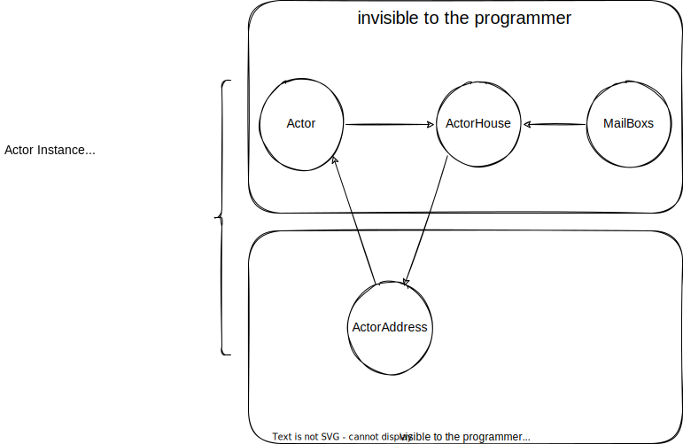
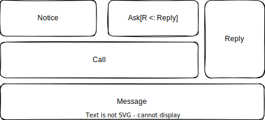
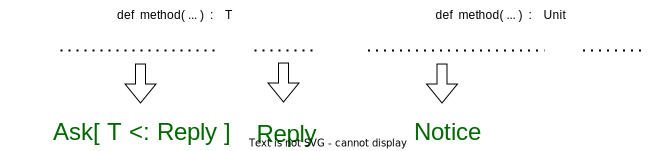
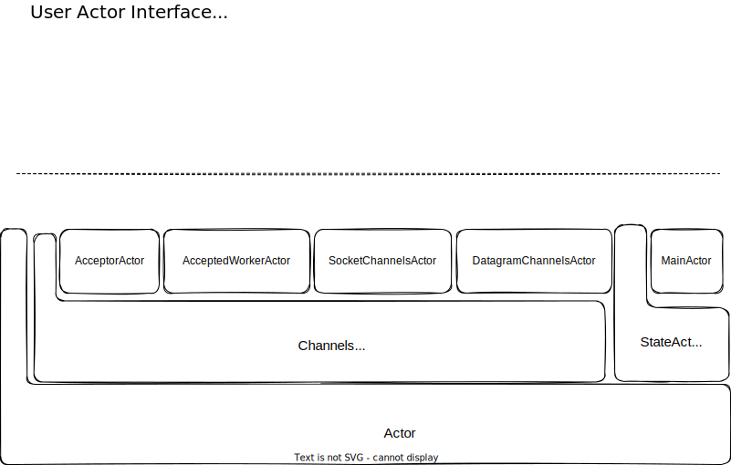
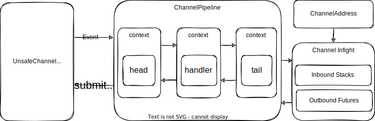
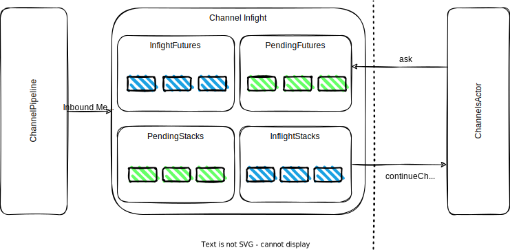
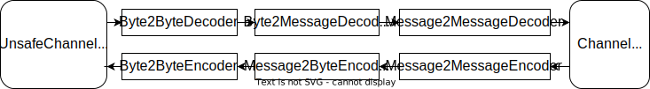
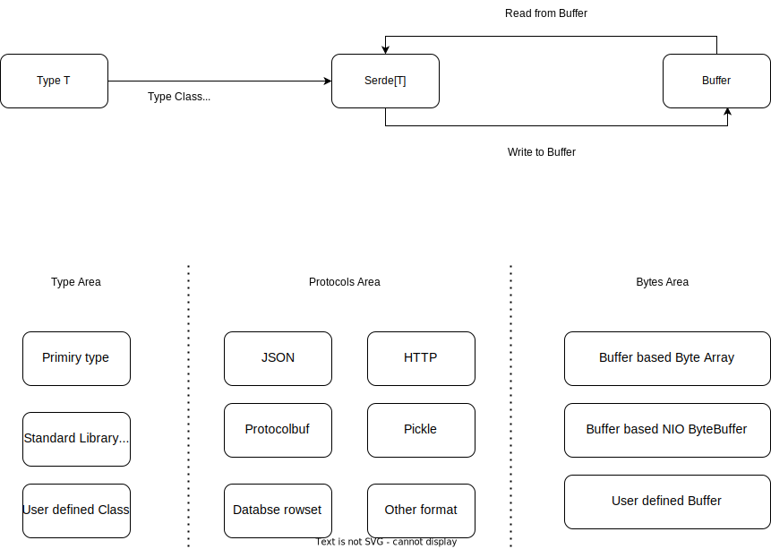

Challenges of existing programming paradigm
As Moore's Law fades and the size of modern software systems grows exponentially, single-core CPUs and even standalone computers are no longer enough to meet our needs. In order to meet this challenge, modern software systems not only need to work well with multi-core CPUs on a single machine, but also need to run on multiple computers in a distributed manner. These challenges are seriously impacting the current mainstream programming paradigm and making the current mainstream programming languages evolve in new directions.
The first is asynchronous programming, but the combination of the object-oriented programming paradigm and asynchronous programming often produces callback hell. This approach destroys object-oriented encapsulation and also makes the code logic more diffuse, making it less maintainable.
The second is that functional programming has become more popular, and now basically all major programming languages support some functional features. Functional programming presents a beautiful vision: everything is immutable! This makes writing code like defining a mathematical function; once the function is defined, every time it is called, as long as the input is the same then the output is the same, and there is no behavior beyond that. This programming paradigm is a wonderful idea, and code written in this way is not only secure but also easier to test and the behavior of the code is more controllable. But functional programming has some drawbacks: it's not easy to deal with state, and a real software system often needs to deal with a lot of state, IO, and so on. Although functional programming also has techniques such as Monad and Effect to deal with these scenarios, these techniques are too complex and expensive for many developers to learn. Remember that famous quote?
A monad is just a monoid in the category of endofunctors, what's the problem?
Meanwhile, there is an old programming paradigm that seems to be better suited to the complexity of modern, highly concurrent, distributed software systems: the Actor model, proposed in 1973. But the Actor model also has some drawbacks, which is perhaps why it has not become as popular as object-oriented programming.
otavia is an Actor programming model implemented in Scala 3. We hope to explore a way to integrate the Actor model more effectively with modern programming languages, and also to explore ways to address some of the shortcomings of the traditional Actor model. The following article provides an overview of the core concepts and design of otavia.
Design principles of otavia
Object-oriented programming is a very useful programming paradigm, and while the original object-oriented idea was somewhat similar to the Actor model, where an object is equivalent to an Actor, modern implementations of object-oriented in the major programming languages have degraded it to a way of organizing and encapsulating the code, since the cost of calling methods directly is much less than message passing. This is wonderful in the single-threaded case, where everything is organized.
But the crisis came with multithreading and multiple CPU cores: multithreading is like a herd of savage bulls rampaging through a fragile jungle of objects! Instead of having a single path of execution, programs are now controlled by a well-organized set of objects. Instead, you need to care carefully whether each object will be accessed by more than one thread at the same time, and you need to double-check your program's concurrency safety. But it's not easy to do. Especially for a software system of enormous size, you don't know how many threads are rushing through your jungle of objects, so you need to go out and simulate every thread with a human brain, track their paths, and then figure out which objects should need to deal with concurrency safety. Imagine tracking down this herd of savage bulls in the jungle, meticulously checking one by one which grasses they've stepped on! God, it's maddening to think about. All this work was already exhausting, but there was an even more serious problem: these bulls would suddenly come to a standstill when they stepped on certain grass! They are blocked and thus suspended, and this reduces the system's CPU utilization, which in turn may lead to the launching of more threads, with more and more concurrent contention, until the system crashes under a concurrency problem that is not rigorously examined!
Happily, new technologies have emerged to solve these problems. The most popular technical solutions are coroutine and JVM virtual threads. However, in our opinion, these techniques are effective in alleviating the problem of low CPU utilization due to suspended threads, but they do not alleviate the problem of having to carefully design our objects due to concurrency competition.
The main reason the problem has gotten so bad we believe is that the current mainstream programming languages and object-oriented programming paradigms are missing some of their key features! That is, the lack of organization of concurrency and the lack of organization of execution flow! Concurrency and execution flow are currently coupled with objects, which was not a problem in early single-threaded environments, but becomes very serious in multi-threaded, multi-CPU environments!
Organizing concurrency and execution flow is where the Actor model excels! With the advent of Scala 3, we saw the possibility of designing an Actor programming tool that was more in line with object-oriented thinking. So, after a long period of conceptualization, I designed otavia and its associated toolkit. The goal is to explore a simpler and safer programming paradigm to meet the current challenges. Also hope to open up a new idea to provide everyone to promote the development of programming tools!
We believe that a better programming hierarchy would look like the following, and the design of otavia follows this hierarchy
System > Process > Threads > Virtual Threads/Stacked coroutines > Actor > Objects > Functions
In this hierarchical design, the Actor is the end point of concurrency, i.e., the Actor and its subsequent parts should all run single-threaded! Actors communicate with each other by sending messages, and multiple messages are processed one by one in the Actor's mailbox in a single-threaded fashion.The logic inside the Actor can be either object-oriented or functional, or even a combination of them, as in Scala! Now everything is simple again and you can boldly use objects without worrying about that wild herd of bulls!
'otavia' is a very interesting project, which is currently in the incubation stage. If you are interested, any contribution from you is warmly welcome! We would also love to hear your suggestions or criticisms about the project. All your comments will ultimately help us to improve the quality of the project! You can also give a like to the project to encourage the contributors to the project! You can also give the project a star to encourage contributors!
Core Runtime
The basic unit for managing concurrency in otavia is the Actor, the user only needs to implement various customized Actors and then send messages between the Actors to achieve the overall system functionality. However, the ideal Actor programming model is not easy to achieve, because real programming scenarios involve not only the interaction of components inside the program, but also the interaction with other components outside the system, which in turn involves IO programming and even timed tasks. To meet these needs, otavia adds some new components to the Actor model. The core components that make up the otavia runtime are:
Actor: AnActoris the basic unit of concurrency inotaviaand it has two basic subclasses. AnActorcommunicates with each other by sending messages. AnActorcan also interact with other components of theActorSystemby way ofEvent. The types ofEventare fixed and cannot be customized by the developer.StateActor: a normalActor.ChannelsActor:Actorfor handling IO.
ActorSystem: A container forActorinstances that is responsible for creatingActorinstances, managing the life cycle ofActorinstances, and scheduling the execution ofActorinstances.Timer: Generates a timed event, generates a timeoutEventand sends it to the relevantActor.Reactor: Processes IO commands submitted by theChannelsActor, listens for IO events, handles IO reads and writes, and sends the IO results to theChannelsActoras anEvent.Address:Actorinstances are isolated from each other and can only communicate with each other by sending messages viaAddress.Message: Used to communicate betweenActors, there are three basic types of messages:Notice,Reply, andAsk[R <: Reply], and user-defined messages must inherit one or more of these.

To program with otavia, the user must first start an instance of ActorSystem, which represents the otavia runtime. The ActorSystem contains the thread pool that schedules the Actor instance to run, the Timer component, and the Reactor component. Next the user simply starts their own Actor instance using ActorSystem. The ActorSystem returns the Address of the corresponding Actor instance to the caller. Next, the user can send messages to the Actor via this Address. Unlike object-oriented method calls, sending a message does not directly execute the logic that processes the message; instead, it puts the message into the Actor's mailbox and waits for it to be processed. Once the Actor has a message in its mailbox that can be processed, the ActorSystem schedules an idle thread to execute the Actor instance.

Another condition for an Actor instance to get thread execution is to receive an Event, which is also put in the Actor mailbox for processing. In otavia, events can only be generated by Timer and Reactor, and users only need to care about TimerEvent generated by Timer when programming. The processing of ReactorEvent produced by Reactor is further encapsulated by ChannelsActor.
Event
An Event is the basic unit of interaction between an Actor and the ActorSystem runtime, and its type is fixed and cannot be customized by the developer. There are two main types of Events
TimerEvent: Generated byTimerto notify a timeout event. OnlyTimeoutEventis used directly in programming. The remainingTimerEvents are used to support other timeout mechanisms and are encapsulated byActor.ReactorEvent: Generated byReactorto notify an IO event. Developer does not need to deal with thisEventdirectly, it is encapsulated byChannelsActor.
The ActorSystem runtime sends an Event to the Actor instance and does not call the Actor instance directly; instead, it puts the Event into the Actor instance's mailbox, and the ActorSystem runtime allocates free threads to dispatch the Actor instance for execution.
Message model
A message is a special object used by Actor for communication, and it is recommended that it be defined using the case class. otavia categorizes the types of messages according to their usage in order to ensure compile-time safety in message sending.

According to the purpose of the message, otavia divides the messages into two types, the Call message is a request message which is used to ask the Actor for an execution process and expects a reply message. A Reply message is a reply message. It's kind of like a method abstraction. Let's see how we define a method. First, we need to give the method a name, then we need to define the parameters of the method, and then we need to define the type of the return value of the method. In otavia, Call represents the method name and method parameters, and Reply represents the return value type. Since sending a message is more expensive than calling a method, Call is simplified to Notice in otavia for the case where the method has a return type of Unit, and the case where a return value is required is specialized to Ask[R <: Reply], where a Notice message does not need to return a Reply message, as in the case of A method with a return value of Unit has no actual return value.

An Ask is a trait with a type parameter R <: Reply that specifies the type of the specific Reply message that this Ask message expects to get. So an Actor in otavia can be compile-time type-safe for sending messages by simply constraining the types of Call messages it can receive via the type parameter. The type parameter of Actor is:
trait Actor[+M <: Call]
When creating an instance of Actor using otavia, it does not return the instance itself, but rather the Address that represents the instance, with the type parameter of Address being the same as that of Actor.
trait Address[-M <: Call]
So we can only send messages of type M to Address which is limited by Actor. The Reply message is sent via the return method of Stack, which is associated with the type of the Call message, so sending a Reply message is also compile-time type-safe. We'll talk more about Stack later.
Actor
There are two basic types of Actor in otavia, StateActor and ChannelsActor, and developers can choose to inherit from one of them according to their needs.

StateActor: A generic Actor that developers can implement to manage state and send and receive messages. This Actor can also interact with a Timer to register a timeout event. When the timeout event is triggered, the Timer sends a TimeoutEvent to the StateActor, and then the ActorSystem schedules the StateActor to execute to handle the TimeoutEvent.
ChannelsActor: Based on the functionality of StateActor, we have added the ability to manage Channels. Channels in otavia are ported from Netty, and are basically the same as Netty. However, unlike Netty, Channel in otavia must be bound to a ChannelsActor and run as part of the ChannelsActor.
For ease of use, otavia abstracts the following common Actors according to different scenarios, and you can choose to inherit one of them to fulfill your needs:

Stack
Stack is the carrier that manages the execution of messages in Actor. When an Actor handles a message of type Call, the message is not passed in directly, but is loaded into a Stack which is then passed to the Actor for execution. A Notice message is loaded into a NoticeStack that executes the resumeNotice method; an Ask message is loaded into an AskStack that executes the resumeAsk method. A developer implementation of Actor needs to implement the following methods to handle Call messages.
protected def resumeAsk(stack: AskStack[M & Ask[? <: Reply]]): Option[StackState]
protected def resumeNotice(stack: NoticeStack[M & Notice]): Option[StackState]
Stack contains a StackState with an initial value of stackstate.start. The return value of the resumeXXX method Option[StackState] means that Stack switches to a new StackState after each resumeXXX execution. Stack ends with the return method, which itself returns a value of None, meaning that Stack no longer switches to the new StackState. If Stack is AskStack, the return method requires an input Reply message as a reply to the Ask message.

A StackState must be associated with one or more Futures. When the resumable method of the StackState returns true or all associated Futures are completed, resumeXXX will be called again to execute the Stack. Note that the Future here is not a Future from the Scala standard library; otavia implements its own Future/Promise system for receiving asynchronous messages and triggering the re-execution of Stacks.
Types of Stack
Different messages have different Stack subclasses.
NoticeStack: Manages the execution ofNoticemessages.AskStack: Manages the execution ofAskmessages.BatchNoticeStack: Used to batch executeNoticemessages.BatchAskStack: Used to batch executeAskmessages.ChannelStack: Executes requests sent byChannel.
Developer-defined messages may inherit both the Notice and Ask traits, and whether they end up being treated as Notice messages or Ask messages depends on how the message was sent: If it is sent using the notice method of Address, it is treated as a Notice message; if it is sent by the ask method, it is treated as an Ask message.
Types of Future
A Future is a receiver for an asynchronous message, and whenever a Future completes, the StackState associated with it is checked to see if the conditions for execution are met. Once satisfied, the resumeXXX method is called again to execute the Stack. There are two types of Futures according to their purpose.
MessageFuture: Used to receive aReplymessage or aTimeoutReplymessage generated due to a timeout.ChannelFuture: Get the result of aChannelexecution or a message from aChannel.
Zero-cost abstraction
Although we use Stack, Future, etc. to manage the execution of messages, we don't have to worry about the system sending too many messages and creating too many extra objects that will put a strain on the GC. Because these objects are created by the otavia runtime and are managed by the object pool, object reuse is maximized. Also, developer-implemented StackState can use the pool if it is used by a high frequency. otavia provides a very simple way to use the object pool. You can refer to the FutureState implementation to learn how to use object pooling.
Advantages of using Stack to manage message execution
By using Stack to manage the execution of messages, we can manage dependencies between messages very well, and sending a message is more like calling a method of an object directly. Going further, we can even implement a set of async/await syntax based on the CPS (Continuation Passing Style) using Scala 3 metaprogramming tools. This is the goal of the project otavia-async. If you are interested in this project, you are more than welcome to contribute!
Kinds of ChannelsActor
In order to better manage different Channels, otavia implements several different kinds of ChannelsActor, they are:
AcceptorActor: manages theChannelthat listens for TCP connections, which needs to instantiate a set ofAcceptedWorkerActors as workingActors. NormalChannels that are accepted by the listeningChannelare wrapped in a message and sent to one of theAcceptedWorkerActors, and managed by the selectedAcceptedWorkerActor.AcceptedWorkerActor: The workingActorfor theAcceptorActor.SocketChannelsActor: manages the TCP clientChannel.DatagramChannelsActor: manages the UDPChannel.
All of these types of ChannelsActor can manage file Channel, and if you only need to use file Channel, you can just inherit ChannelsActor.
Life cycle of an Actor
The entire life cycle of an Actor is managed by the otavia runtime. When ActorSystem creates an Actor object, it immediately returns the Address of the Actor object to the caller. At the same time, the Actor object is placed in a mount queue waiting to be mounted to ActorSystem. Only after the Actor object is mounted, the runtime schedules the Actor to process the Message or Event in the mailbox. Runtime-related properties are set when the Actor object is mounted, so runtime-related properties within the Actor can only be used after the object is mounted, such as logger, context, and so on. Actor provides some hook methods for running at different lifecycles.
afterMount: Called after theActorobject is mounted toActorSystem.beforeRestart: Called before reboot.restart: Methods for restartingActorinstances.afterRestart: Called after a reboot.AutoCleanable.cleaner: If your implementation ofActorneeds to clean up some unsafe resources, inherit theAutoCleanabletrait and implement thecleanermethod.
Although the life cycle of Actor instances is managed by ActorSystem, their destruction is still handled by the JVM's garbage collection. If an Actor instance is no longer referenced by any GC root object, it is garbage collected by the JVM. If your Actor has some unsafe resources that cannot be garbage collected by the JVM, you can extend AutoCleanable and implement the cleaner method. The cleaner method creates a custom ActorCleaner object to clean up the unsafe resources. Because ActorCleaner relies on the JVM's phantom references to identify Actors that will be garbage collected, you need to be careful when implementing ActorCleaner to ensure that it doesn't hold a reference to the Actor object or the address of the Actor or the Actor will never be garbage collected.
The following figure shows the complete lifecycle of an Actor:

Channel
In otavia, a Channel represents an IO object, such as an open file, a network connection, and so on. Since Channel is ported from Netty, the basic components are similar to Netty, such as ChannelPipeline ChannelHandler ChannelHandlerContext, etc., and work in the same way as Netty.

But there are also some adjustments that need to be made in order for Channel to work better with otavia's ChannelsActor:
- Netty's
Channelneeds to be registered toEventLoopafter it is created. TheEventLoopis a thread that listens for IO events and then schedules the associatedChannelfor execution. Similarly for outbound calls onChannel, they need to be converted into tasks to be submitted to theEventLoopthread for queuing. There is noEventLoopcomponent inotavia. TheChannelinotavianeeds to be mounted on aChannelsActorafter it has been successfully created, and then theChannelsActorwill register theUnsafeChannelof theChannelwith theReactor. TheReactorlistens for IO events on the associatedChanneland generates aReactorEventto send to theChannelsActor. When theChannelsActoris scheduled for execution, it assigns theReactorEventto the relevantChannelto execute the inbound process. - Netty's
EventLoopnot only listens to IO events, but also schedules the relevantChannelto execute when an IO event occurs, and the listening to IO, reading and writing of IO data, and execution of theChannelPipelineare all in the sameEventLoopthread. However, inotavia, listening to IO, reading and writing IO data are handled byReactor, and then the relatedReactorEventis generated and sent toChannelsActor, which is responsible for scheduling the execution ofChannelPipeline. - All business logic in Netty must be encapsulated into a
ChannelHandlerand then placed into aChannelPipeline. If an inbound event reaches the end of theChannelPipelineand theTailHandlerstill hasn't processed it, then Netty ignores it. However, inbound events inotaviathat reach theTailHandlercontinue on to theInflightcomponent within theChannel, which is then distributed byInflightto theStackwithin theChannelsActorfor processing. In fact, the role of theChannelPipelineinotaviais more focused on byte-sequence conversion and encoding, such as TLS, compression, serialization and deserialization of data objects, etc. Other complex business logic is handled directly by passing deserialized objects to theInflightcomponent of theChannel, which is then passed to theChannelsActorfor further processing.
Channel Behavioral Abstractions
We abstract the behavior of Channel through two data structures:
ChannelFuture, which is a subclass of Future, so it can be managed by StackState of Stack, which we introduced earlier. A ChannelFuture makes a request to a Channel on behalf of a ChannelsActor and expects to get a reply from the Channel, which can be either an IO-ready event or a specific message (e.g., send an HTTP request, get an HTTP response using a ChannelFuture). Usage of ChannelFuture is restricted to ChannelAddress. The ChannelAddress is a kind of encapsulation for more standardized use of Channel. Inside the ChannelsActor, except for some special methods that can access Channel directly, the rest of the access to Channel can only be done through the ChannelAddress; The other data structure is the ChannelStack, this kind of data structure is ChannelStack.
The other data structure is ChannelStack, an object that makes a request on behalf of the Channel to our ChannelsActor. This is a very common scenario when writing a web server program, for example, a Channel receives an HTTP request and pass it to a ChannelsActor for specific business processing. This HTTP request is put into a ChannelStack object and sent to the ChannelsActor for processing. A ChannelStack is a Stack whose return value is written to a ChannelPipeline in response to an external program.
Note that the ChannelFuture datatype is also available in Netty, but it is used differently in Netty than it is in otavia! Each call to the outbound method of Channel in Netty is associated with a ChannelFuture, but this ChannelFuture is used to get the result of the call itself. If you want to make a request to Channel and expect a data reply from the network, you need to get it some other way. But the ChannelFuture in otavia is a higher level abstraction that represents the expected data response to a network request!
ChannelPipeline
The ChannelPipeline is basically the same as the ChannelPipeline in Netty, with HeadHandler and TailHandler as the first and last nodes, respectively. When the Channel is initialized, the user can add a custom ChannelHandler to the ChannelPipeline via Channel. Like Netty, ChannelHandler is wrapped by ChannelHandlerContext, which then concatenates all ChannelHandlers into a queue for sequential execution.
A ReactorEvent sent by a Reactor to a ChannelsActor triggers an inbound event for the ChannelPipeline. inbound events are passed from the HeadHandler to the TailHandler. Calls to the outbound-related methods of the Channel trigger outbound events from the TailHandler to the HeadHandler. outbound events arrive at the HeadHandler and are ultimately converted into commands that are submitted to the Reactor.

Channel Inflight
The Inflight is not a real component, it is just a representation of some of the data structures and mechanisms in the Channel. Users don't need to interact with them directly, they just need to set some properties through the setOption method of the Channel to control their behavior.
// source code in AbstractChannel
// outbound futures which is write to channel and wait channel reply
private val inflightFutures: QueueMap[ChannelPromise] = new QueueMap[ChannelPromise]()
// outbound futures which is waiting channel to send
private val pendingFutures: QueueMap[ChannelPromise] = new QueueMap[ChannelPromise]()
// inbound stack which is running by actor
private val inflightStacks: QueueMap[ChannelStack[?]] = new QueueMap[ChannelStack[?]]()
// inbound stack to wait actor running
private val pendingStacks: QueueMap[ChannelStack[?]] = new QueueMap[ChannelStack[?]]()

Inflight is an abstraction of the control of sending packets for network communication. How do we typically use a network connection? In most cases, we send a request packet and wait for the response packet to be returned. Until the response packet is returned, we can't send another request packet over the network connection. But this is an inefficient use of the network connection, so there are many application layer protocols that support sending multiple request packets over a single network connection, such as the pipeline mechanism in HTTP 1.1, the pipeline mechanism in redis, and so on. However, due to the complexity of implementing these mechanisms, many applications do not support this type of optimization.
In otavia, however, the powerful Inflight mechanism makes it very easy to do this! Now that we know what ChannelFuture and ChannelStack are used for in Channel, the pipeline optimization mentioned above can simply be understood as a single Channel handling multiple ChannelFutures or ChannelStackss at the same time. There are several components in Channel that support this efficient use of network connections:
inflightFutures: AChannelFuturethat has gone into theChannelPipelinefor processing.pendingFutures: AChannelFuturethat is still queued for processing into theChannelPipeline.inflightStacks: AChannelStackthat has gone into aChannelsActorfor execution.pendingStacks: AChannelStackthat is still queuing up to enter theChannelsActorfor execution.
You can control the behavior of these components to adapt to different ways of working with network connections through setOption:
CHANNEL_FUTURE_BARRIER: A function of typeAnyRef => Booleanthat checks whether the request value of aChannelFutureis a barrier, and if a request is a barrier, it must wait for theinflightFuturesto finish processing before it can enter theinflightFutures. At the same time,inflightFuturescan only process oneChannelFuturewhen processing a barrier, and can only continue to process theChannelFutureinpendingFutureswhen it finishes. The default value is_ => false.CHANNEL_STACK_BARRIER: Used to set a function of typeAnyRef => Booleanto check if the request value of aChannelStackis a barrier, and if a request is a barrier then it must wait for theinflightStacksto finish processing before it can enter theinflightStacks. AlsoinflightStackscan only process oneChannelStackwhen processing a barrier, and can only continue to processChannelStacksinpendingStackswhen processing is complete. The default value is_ => true.CHANNEL_MAX_FUTURE_INFLIGHT: The maximum number ofChannelFuturesthatinflightFuturescan process at the same time. When the maximum number is reached, newChannelFuturesare added to thependingFuturesqueue and wait to be added toinflightFutures. The default value is 1.CHANNEL_MAX_STACK_INFLIGHT: The maximum number ofChannelStacksthatinflightStackscan process at the same time. When the maximum number is reached, newChannelStacksare added to thependingStacksqueue waiting to enterinflightStacks. The default value is 1.CHANNEL_STACK_HEAD_OF_LINE: Used to set whether theChannelprocessingChannelStackis line head blocking. WheninflightStackshave multipleChannelStacksentering theChannelsActorat the same time, the later initiatedChannelStackmay finish earlier than the first initiatedChannelStack. When head blocking is set, the later completedChannelStackscannot directly execute the subsequentChannelPipeline, but have to wait for the completion of all theChannelStacksthat were initiated first before they can be executed. The default value isfalse.
Setting these values in combination will result in more correct and efficient use of network connection resources in different scenarios!
Reactor
The Reactor is the component in otavia that performs unsafe IO work and is transparent to the user of otavia. Reactor is responsible for receiving IO commands from ChannelsActor and generating the associated ReactorEvent to send to ChannelsActor. However, this is all encapsulated by ChannelsActor and most users don't need to worry about Reactor. The specific tasks of Reactor are to execute IO commands submitted by ChannelsActor, listen for IO events, read and write IO data, and send ReactorEvent to ChannelsActor.
The default Reactor in otavia is based on NIO. However, since Reactor uses the SPI mechanism to implement the IO transport layer, we can also extend the relevant interfaces to use more advanced IO techniques such as epoll, io_uring, and so on, to realize a more high-performance IO transport layer. Since this is an SPI implementation, replacing another IO transport layer implementation will not affect the business code we write at all, we just need to include the relevant JAR in our CLASSPATH when we run the program. The goal of the native-transport project in the otavia ecosystem is to implement a higher-performance IO transport layer based on epoll and io_uring! If you are interested, your contributions are warmly welcomed!
Timer
All timeout related functionality in otavia is supported by Timer. The Timer is one of the core components of the otavia runtime, and provides APIs that allow developers to register a timeout event trigger. When the trigger condition is met, Timer generates a TimerEvent and sends it to the registered address. The underlying implementation of Timer is ported from HashedWheelTimer in Netty.
Actor Dependency Injection
Scala 3 provides a powerful Match Types mechanism, which allows us to succinctly inject an Actor's Address through the Actor's type, and this behavior is compile-time type-safe!
Other core modules in the ecosystem
otavia contains an extensive ecosystem beyond the core runtime. The following describes the design goals for only some of the modules that are more closely related to the core. For other modules you can check out the otavia ecosystem.
CPS transformation
The execution of a Call message in otavia requires a Stack to be started, and then the entire Call message execution lifecycle is managed by the Stack. So the resumeXXX method implemented by the developer needs to match the StackState execution and return a new StackState. Because the pattern is relatively fixed, we can use the Scala 3 metaprogramming tools to implement a set of async/await syntaxes based on CPS transformations, which allows us to write code in a continuously blocking style.
Project repository: GitHub - otavia-projects/otavia-async
Buffer
Like Channel, Buffer is ported from Netty. Since Channel has to deal with a lot of byte-sequence conversion, serialization and deserialization, the Buffer API is a must. Currently, Buffer just keeps the API basically the same as Netty, and its implementation as well as the implementation of the memory pool has been greatly simplified.
Another inconsistency with Netty is that otavia removes CompositeBuffer and instead otavia introduces AdaptiveBuffer.
An AdaptiveBuffer is a special kind of Buffer that can be infinitely scalable and burned later. Because AdaptiveBuffer has a BufferAllocator associated with it, it automatically allocates some memory when it runs out of space, and if the data is read, the read memory is automatically freed to the BufferAllocator. AdaptiveBuffer is a data structure that is heavily used in Channel. IO data received from the Reactor is written to the AdaptiveBuffer before being passed to the ChannelPipeline. At the same time, the Channel's write also ends up writing data to the AdaptiveBuffer, sending the bytes of data inside the AdaptiveBuffer to the Reactor to write to the IO object via the flush method.
codec
The codec module provides some common abstract classes for ChannelHandler, and developers can choose to inherit one of them according to their needs. otavia categorizes ChannelHandler according to its position in the ChannelPipeline and its function.
Byte2ByteXXcoder: Used for conversion of byte sequences, where the input and output are byte sequences, such as TLS, compression, etc.Byte2MessageDecoder: Used for object deserialization where the input is a sequence of bytes and the output is a data object.Message2ByteEncoder: Used for object serialization where the input is a data object and the output is a sequence of bytes.Message2MessageXXcoder: Object conversions, where both input and output are objects.
These types of ChannelHandlers in the ChannelPipeline are not required and can be combined by the developer according to their needs.

In addition to this, the codec module provides some tool classes and implementations of the completed ChannelHandler, such as Base64, compression, and so on.
Serialization Deserialization Framework
Serde expects to provide a unified interface for all serialization and deserialization tools. Since most serialization deserialization frameworks in the current Scala ecosystem basically serialize to java.nio.ByteBuffer or Array[Byte], they don't work well with otavia's Buffer (which involves multiple memory copies and doesn't easily take advantage of the memory pool). So otavia introduced the Serde[T] interface, which uses Buffer as the basic serialization deserialization target. So serialization frameworks based on Serde implementations can work efficiently with AdaptiveBuffer, avoiding unnecessary memory copies and utilizing the memory pool directly. At the same time, developers can also extend Buffer, such as the file-based implementation of Buffer, to serialize objects directly into files. This makes the input and output targets of the serialization framework more flexible.

SQL
The standard for Actor access to relational databases in otavia references the JDBC design.
Logger
SLF4A is the logging standard in otavia and references the design of SLF4J. You can get a Logger with the following code
Logger.getLogger(getClass, system)
However, there is already a Logger property within StateActor and ChannelsActor that developers can use directly.
Testkit
Toolset for Testing Actors.
The other
See more modules at otavia ecosystem.